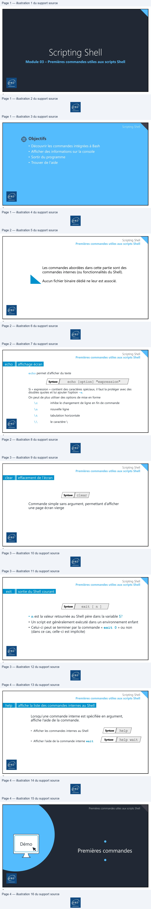

Transcription du document du Drive TSSR. La mise en forme est adaptée au Web ; les compléments IA du portail sont présentés séparément.
Module 03 – Premières commandes utiles aux scripts Shell
1
Scripting Shell
Objectifs
• Découvrir les commandes intégrées à Bash
• Afficher des informations sur la console
• Sortir du programme
• Trouver de l'aide
2
Scripting Shell
Premières commandes utiles aux scripts Shell
Les commandes abordées dans cette partie sont des
commandes internes (ou fonctionnalités du Shell).
Aucun fichier binaire dédié ne leur est associé.
3
Scripting Shell
Premières commandes utiles aux scripts Shell
echo
affichage écran
echo permet d’afficher du texte
echo [option] "expression" Syntaxe
Si « expression » contient des caractères spéciaux, il faut la protéger avec des doubles quotes et lui ajouter l’option –e.
On peut de plus utiliser des options de mise en forme
\c inhibe le changement de ligne en fin de commande
\n nouvelle ligne
\t tabulation horizontale
\\ le caractère \
4
EN
[
CSA|
Scripting Shell
Premières commandes utiles aux scripts Shell
clear
effacement de l’écran
clear Syntaxe
Commande simple sans argument, permettant d’afficher
une page écran vierge
5
Scripting Shell
Premières commandes utiles aux scripts Shell
exit
sortie du Shell courant
exit [ n ] Syntaxe
• n est la valeur retournée au Shell père dans la variable $?
• Un script est généralement exécuté dans un environnement enfant • Celui-ci peut se terminer par la commande « exit 0 » ou non (dans ce cas, celle-ci est implicite)
6
VE
er,
VE
[7
Scripting Shell
Premières commandes utiles aux scripts Shell
help
affiche la liste des commandes internes au Shell
Lorsqu’une commande interne est spécifiée en argument,
affiche l’aide de la commande.
help Syntaxe
• Afficher les commandes internes au Shell
help wait Syntaxe
• Afficher l’aide de la commande interne wait
7
Premières commandes utiles aux scripts Shell
Démo
8
LE|
RS
|
|
End
